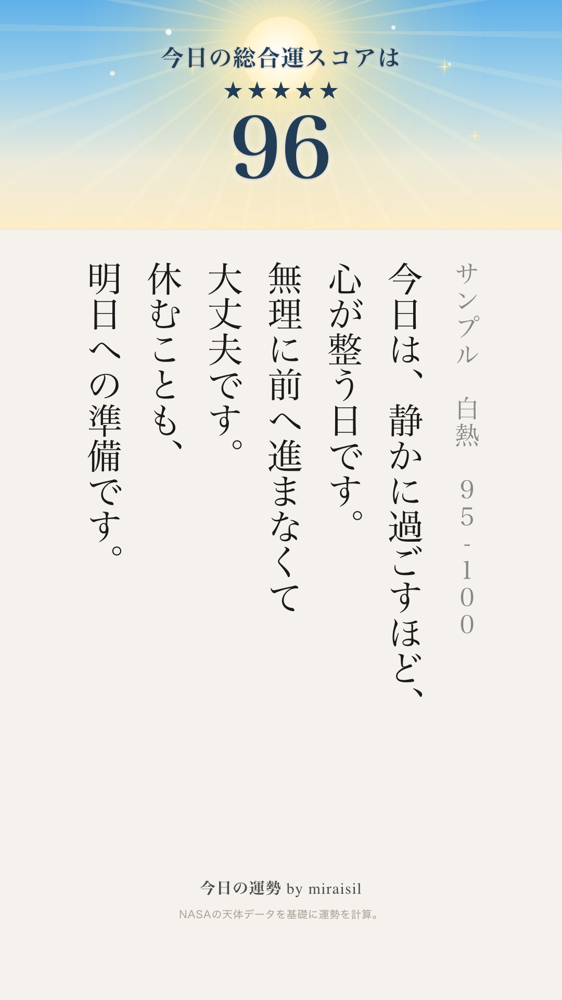
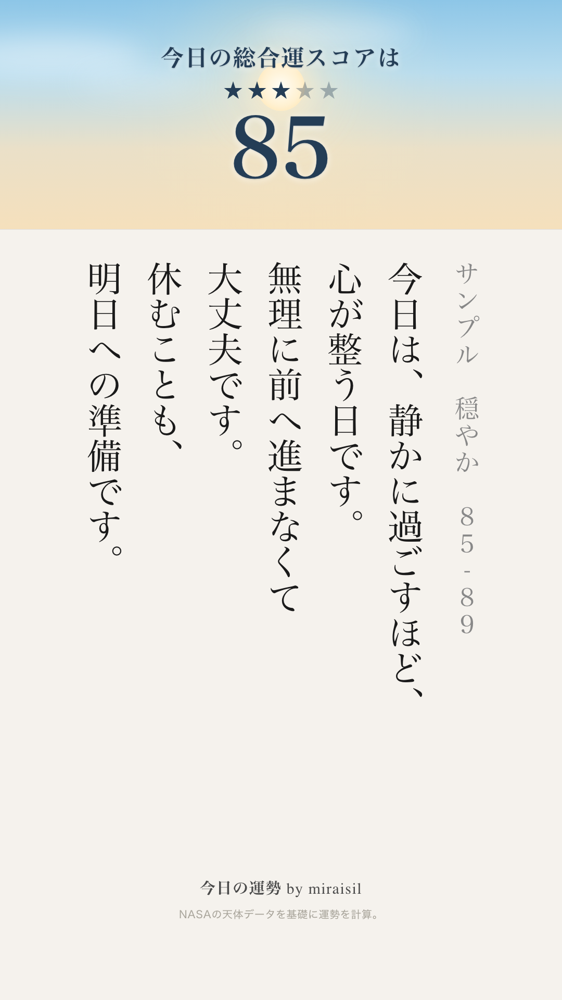
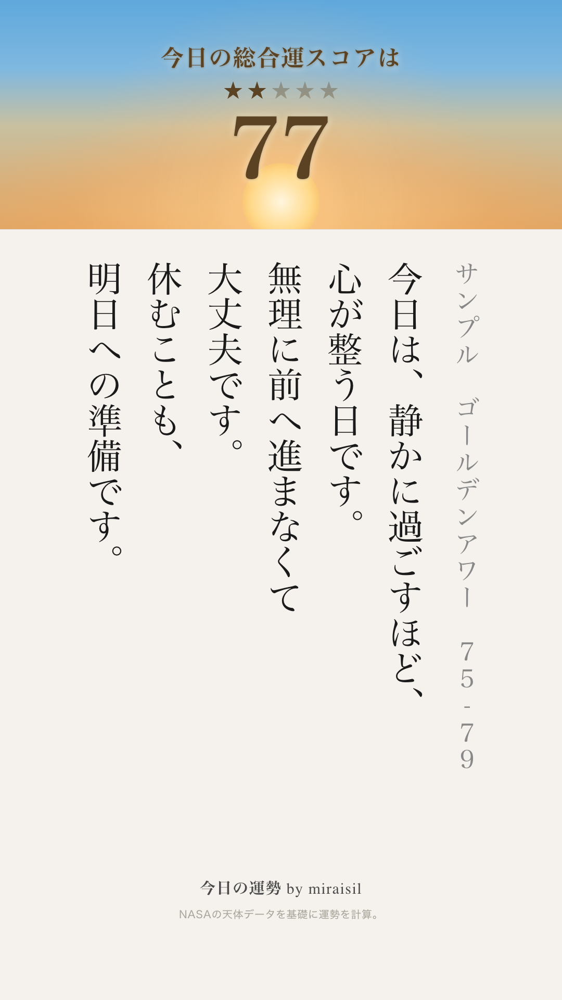
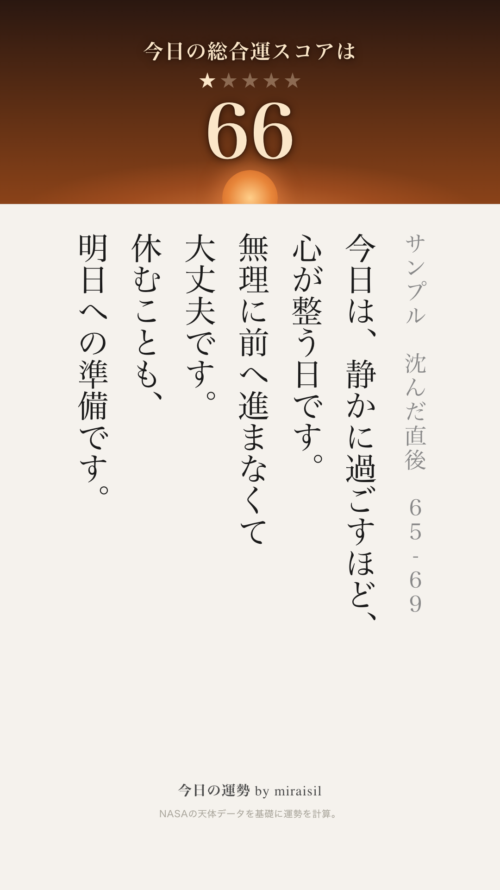

SCORE BAND COLOR「暖色・光の量」版 TEST · Internal Only
方針転換: 「暗くしない・寒色/紫は一切使わない・全部暖色で明るい」。良し悪しの信号は
明るさ/色相の飛びではなく「光の量」（太陽の白熱・光芒・きらめきの強さ）だけで表現する。
高スコアほどエネルギッシュ、低スコアほど静かで柔らかい光になる。旧「漆黒の夜＋星空」
（65-69）は廃止し、"静かな夕暮れ・残照"に置き換えた。
「小さな空の情景」プロトタイプ（方針A・代表4スコアのみ）
方針転換: 平らな色グラデでは暖色が金属/ブロンズに、中立ベージュが泥に見える問題を、
"空の絵"にすることで解決する。色帯＝空、下のベージュ本文＝地面、境目＝地平線と捉え、
空は「上空＝青、地平寄り＝暖色」の縦グラデを基本にした。太陽（円＋グロー）を1つ置き、
その高さと輝きをスコアに連動させる: 96は澄んだ青空高くで白熱（光芒＋きらめき5個）、
77は太陽が地平近くまで下がり上空は青のまま地平だけ金色に染まるゴールデンアワー、
66は太陽が地平線ぎりぎり（大半が隠れる）で空は暖色の深い夕闇、地平にだけ残照が
残る（真っ黒・紫にはしない）。
文字色は空の明暗に応じて調整: 96・85は濃紺、77は濃い金茶、66は淡い生成り。
背景グラデーションの色相は青(200-205°)→warm-neutral(37-60°、低彩度で緑を経由
しない)→暖色(16-32°)の範囲のみで構成し、紫域・真っ黒は使用していません。
まずこの4枚（96/85/77/66）のみの実装です。7段階への正式展開は承認後に進めます。
【85を追加改善】指摘: 85が淡く洗い流されたような薄い空で、太陽も光芒なしで存在感が
弱く、96と77に挟まれると"色あせて何もない"印象だった。→ 上空の青をより澄んで豊かな
スカイブルーに（彩度47%→65%）、太陽にふんわり大きめのハローを追加して「陽が射して
いる」存在感を出し、極薄の雲を3枚重ねて奥行きを足した（一色べったりのグラデを回避）。
【96と85の格差を再確保】指摘: 85を快晴に格上げした結果、96（青空＋白熱＋光芒）と
85（青空＋ハロー＋薄雲）の差が縮まり、どちらも「明るい青空の太陽」で見分けにくく
なった。→ 85を地味に戻すのではなく、96を突き抜けさせ、85はほんの少しだけ引く方針。
96: 空の青をさらに鮮やかに（彩度78%→75%はほぼ維持しつつ明度/彩度バランス調整）、
太陽を128px→148pxに拡大、グロー半径・光芒の不透明度を増し、きらめき点4つ（flare）
を追加して「最上位の特別な一枚」に。85: 太陽108px→92px、ハローの半径・不透明度を
1段引いて、96ほど眩しくない「穏やかな快晴」の位置に戻した（豊かな青空・薄雲3枚は
維持）。

96点 昼の絶頂 95-100 ★5
太陽拡大＋flare追加（今回さらに強化）

85点 気持ちのいい快晴 85-89 ★3
ハローを1段控えめに（今回調整）

77点 ゴールデンアワー 75-79 ★2
太陽：地平近く・上空は青のまま

66点 沈んだ直後 65-69 ★1
太陽：地平線ぎりぎり・残照のみ
96と85が一目で別物に見えるか（96が突き抜けているか、85が96の劣化版に見えないか）
を確認してください。
この4枚で確認したいこと: (1)空の情景として成立しているか (2)77が"夕焼けの空"に
見えるか（ブロンズの板に見えていないか） (3)66が"沈んだ夕闇"に見えるか
（真っ黒・紫になっていないか） (4)太陽の高さだけで良し悪しが一目で読めるか。
（参考・旧版）青を戻した空スペクトル版
方針転換: 前版が全部オレンジで「空」に見えなかったのを解消するため、高スコア側に
青空を戻した。紫は引き続き不使用。上端(95-100)は澄んだ青空に太陽が白熱する空、
80-84は青と暖色の境目を吸収する中立のうすもや帯、そこから75-79の夕焼け、
70-74の深い夕闇を経て、65-69は真っ黒にはせず"暖色の深い闇"（深く沈んだ焦茶）で
底を受け止める。
光の効果の強度配分は前版から変更なし（95-100が最も強く、下にいくほど静かに絞る）。
青系の明るい帯(95-100〜85-89)は文字色を濃紺(#243d56)に、暖色の明るい帯
(80-84・75-79)は濃い金茶(#5a4222)のまま、暗い帯(70-74・65-69)は淡い生成り
(#fbe6c8)で可読性を確保。
色相は青(約200°)→中立ベージュ(約39°)→橙(約20-36°)→深い赤茶(約15°)へ地続きに
移行し、紫域（270-320°付近）には一切入らないことを確認済み。
 96点 白熱 95-100 ★5
96点 白熱 95-100 ★5
#f2f8fb→#d2e6f2
 92点 好天 90-94 ★4
92点 好天 90-94 ★4
#dcebf4→#bcd8ea
 85点 うすもや 85-89 ★3
85点 うすもや 85-89 ★3
#e2e9ec→#cbd8de
 82点 もや濃い 80-84 ★3
82点 もや濃い 80-84 ★3
#e8e1d3→#d6c9b2（青⇄暖色の中立帯）
 77点 夕焼け 75-79 ★2
77点 夕焼け 75-79 ★2
#edcb99→#dba465
 72点 深い夕闇 70-74 ★2
72点 深い夕闇 70-74 ★2
#b56e3e→#7e3f20（文字は生成りに）
 66点 深く沈んだ底 65-69 ★1
66点 深く沈んだ底 65-69 ★1
#3a1c12→#1a0c08（文字は生成りに）
7段階を横に並べた状態で、上端の青空〜下端の深い底まで青→中立→夕焼け→深闇で
地続きに繋がっているか、中間（85/82/77）が見分けられるか、単独1枚でも
上か下か伝わるか、紫・真っ黒が無いかを確認してください。80-84の中立帯で
青→暖色の段差が自然に吸収できているかも見てください。